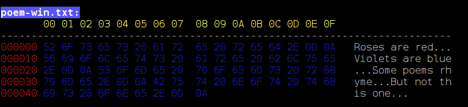

New Stuff
For another challenge: Read all of the words into a linked list, keeping the list sorted as you go. This means that you need to walk the linked list looking for the proper position for the word. If you don't keep the list sorted as you go, you will have to sort it later. Efficiently sorting an unsorted linked-list is non-trivial.gcc -Wall -Wextra -Werror -ansi -pedantic main.c sortwords.c -o sortwords
He starts walking until he either reaches land or falls off the side. Will he make it to land or fall off one of the sides? How many steps did it take? There's a GUI version here.A drunk is standing on a pier that extends from land into the water. The distance from the drunk to each edge of the pier is as follows: Behind: 2 feet In front: 20 feet To the left: 5 feet To the right: 5 feet Each step that he takes is 1 foot. These are the probabilities of stepping in each direction: Back: 10% Forward: 50% To the left: 20% To the right: 20%
BTW, this concept is not new. It's formally known as a Random Walk problem. Find more details here and here.
Labs and Homework Modifications
dumpit poem.txt -w8
poem-win.txt:
00 01 02 03 04 05 06 07
------------------------------------------
000000 52 6F 73 65 73 20 61 72 Roses ar
000008 65 20 72 65 64 2E 0D 0A e red...
000010 56 69 6F 6C 65 74 73 20 Violets
000018 61 72 65 20 62 6C 75 65 are blue
000020 2E 0D 0A 53 6F 6D 65 20 ...Some
000028 70 6F 65 6D 73 20 72 68 poems rh
000030 79 6D 65 2E 0D 0A 42 75 yme...Bu
000038 74 20 6E 6F 74 20 74 68 t not th
000040 69 73 20 6F 6E 65 2E 0D is one..
000048 0A .
dumpit poem.txt -w24
poem-win.txt:
00 01 02 03 04 05 06 07 08 09 0A 0B 0C 0D 0E 0F 10 11 12 13 14 15 16 17
----------------------------------------------------------------------------------------------------------
000000 52 6F 73 65 73 20 61 72 65 20 72 65 64 2E 0D 0A 56 69 6F 6C 65 74 73 20 Roses are red...Violets
000018 61 72 65 20 62 6C 75 65 2E 0D 0A 53 6F 6D 65 20 70 6F 65 6D 73 20 72 68 are blue...Some poems rh
000030 79 6D 65 2E 0D 0A 42 75 74 20 6E 6F 74 20 74 68 69 73 20 6F 6E 65 2E 0D yme...But not this one..
000048 0A .
as well as:dumpit foo.txt bar.txt baz.txt
You can download a compiled version here. It's not super-intelligent, as there can be no spaces between the -w and the value X.dumpit *.txt -w32
Much more intelligent ones are here: A Windows version (dumpit.exe), a Linux version (dumpit), and a MacOS version (dumpit-mac). These do multiple files on the command line as well as color.

Just type:
to see the options:dumpit --help
Usage: dumpit [options] [file1 file2 ...] Options: -w --width How wide the output is (default is 16 chars). -c --color Use colorized output. -h --help Display this information. If no input files are specified, read from stdin.
Not a tub, but a ton Madam, I'm Adam Go hang a salami, I'm a lasagna hog
2016
January February March
Su Mo Tu We Th Fr Sa Su Mo Tu We Th Fr Sa Su Mo Tu We Th Fr Sa
1 2 1 2 3 4 5 6 1 2 3 4 5
3 4 5 6 7 8 9 7 8 9 10 11 12 13 6 7 8 9 10 11 12
10 11 12 13 14 15 16 14 15 16 17 18 19 20 13 14 15 16 17 18 19
17 18 19 20 21 22 23 21 22 23 24 25 26 27 20 21 22 23 24 25 26
24 25 26 27 28 29 30 28 29 27 28 29 30 31
31
April May June
Su Mo Tu We Th Fr Sa Su Mo Tu We Th Fr Sa Su Mo Tu We Th Fr Sa
1 2 1 2 3 4 5 6 7 1 2 3 4
3 4 5 6 7 8 9 8 9 10 11 12 13 14 5 6 7 8 9 10 11
10 11 12 13 14 15 16 15 16 17 18 19 20 21 12 13 14 15 16 17 18
17 18 19 20 21 22 23 22 23 24 25 26 27 28 19 20 21 22 23 24 25
24 25 26 27 28 29 30 29 30 31 26 27 28 29 30
July August September
Su Mo Tu We Th Fr Sa Su Mo Tu We Th Fr Sa Su Mo Tu We Th Fr Sa
1 2 1 2 3 4 5 6 1 2 3
3 4 5 6 7 8 9 7 8 9 10 11 12 13 4 5 6 7 8 9 10
10 11 12 13 14 15 16 14 15 16 17 18 19 20 11 12 13 14 15 16 17
17 18 19 20 21 22 23 21 22 23 24 25 26 27 18 19 20 21 22 23 24
24 25 26 27 28 29 30 28 29 30 31 25 26 27 28 29 30
31
October November December
Su Mo Tu We Th Fr Sa Su Mo Tu We Th Fr Sa Su Mo Tu We Th Fr Sa
1 1 2 3 4 5 1 2 3
2 3 4 5 6 7 8 6 7 8 9 10 11 12 4 5 6 7 8 9 10
9 10 11 12 13 14 15 13 14 15 16 17 18 19 11 12 13 14 15 16 17
16 17 18 19 20 21 22 20 21 22 23 24 25 26 18 19 20 21 22 23 24
23 24 25 26 27 28 29 27 28 29 30 25 26 27 28 29 30 31
30 31
Depending on the browser, you may see different characters here. I've included a main file called guessme.c with this text to get you started: HTML Text.ÉÛÖ™ØÑÚÕ™ÂàÐÞ µÜÂÞŒÈÞÕåÐîÑŒÕèÆœŒÃÞÍÙÑ×ÞÝÑ™µØÑÓÞÑÞÆ™ØÑåÔ¥´áÅÞÅÐîÔÛÏ ÕãÂçÏÑŒÌçÐçŒÂÛÐåàâÕœŒÃÞÍÙÑ×ÞÝÑ
And not to be repetitive, but you MUST download the text file. Don't copy the text from the webpage or you'll be sorry.